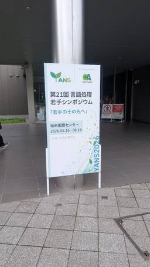
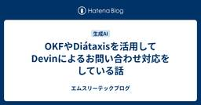
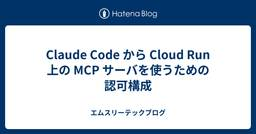

エムスリーテックブログ
https://www.m3tech.blog/
エムスリー(m3)のエンジニア・開発メンバーによる技術ブログです
フィード

Claude Codeでトークンリミットが頻発したので、作業ごとにリミットを設定した 51
51
エムスリーテックブログ
この記事は、Unit7 リサーチプロダクトチームのブログリレー7日目の記事です。 こんにちは、エムスリーエンジニアリンググループ/Unit7 リサーチプロダクトチームでチームリーダーをやっている遠藤です。 皆さん、トークン使い切ってますか？私は24時間トークンを使い切れる人間でありたいと思っています。 エムスリーエンジニアリンググループにおける開発ではAIは使い放題なので、量に切迫しているというわけではありません。それでも個人利用も含めてサブスクプランの上限があれば使い切りたくなってしまうのが人情です。 そして、トークンを使い切ろうとした結果、最近私はトークンリミットと戦っています。 背景: …
20時間前

Apache EChartsにllms.txt対応をコントリビュートした話 1
エムスリーテックブログ
この記事は、Unit7(リサーチプロダクトを扱う部署)ブログリレー6日目の記事です こんにちは、Unit7 リサーチプロダクトチームの江波戸です。 Apache EChartsの公式ドキュメントはSPAのため、AIエージェントがHTTPで取得しても本文が読めません。これを上流側で解決するため、llms.txt とMarkdown版ドキュメントの生成を本家に提案してマージされました。この記事では、その設計と実装、振り返りを書きます。
2日前
Testcontainersで実DBを使う並列テスト基盤を設計する 58
エムスリーテックブログ
【Unit7 ブログリレー5日目】 記事とは関係ない自宅の本棚。気づいたら本が増えてます。 エムスリーエンジニアリンググループ Unit7(リサーチプロダクトチーム)の丸田です。 現在開発しているプロジェクトでは、可能な限りMockを使わず、実際のPostgreSQLに接続してJUnitでテストを動かしています。 Repositoryのテストだけでなく、HTTPリクエストを投げるControllerのテストまで実DBに繋いでいます。 実DBを使うと本番に近い状態で検証できますが、テストをそのまま並列実行するわけにはいきません。 複数のテストが同じDBの状態を読み書きするため、互いの操作が干渉し…
5日前

YANS2026にゴールドスポンサーとして参加してきました！
エムスリーテックブログ
スポンサーセッションでの1分間ピッチ こんにちは。AI・機械学習チームの池嶋です。 エムスリーは2026年8月17-18日に仙台国際センターで開催された第21回言語処理若手シンポジウム(YANS2026)に、ゴールドスポンサーとして協賛させていただきました！ 当日は私を含むAI・機械学習チームのメンバー3名で参加してきましたので、その模様を紹介します！
5日前

OKFやDiátaxisを活用してDevinによるお問い合わせ対応をしている話 38
エムスリーテックブログ
【Unit7ブログリレー4日目】（Unit7のメンバーが持ち回りで記事を書く企画です） エンジニアリンググループ Unit7（リサーチプロダクトチーム）の長谷川です。 AIコーディングが当たり前になって久しいですが、じゃあ実際どう使うのがいいのか、運用のやり方はまだ手探りです。今回はその手探りの1つ、「ビジネスサイドからの問い合わせをAIに答えてもらう」取り組みを紹介します。 さて、社内のあるWebサービスには、エンジニアだけでなく、運用を担うビジネスサイドの担当者も関わっています。 担当者からは、クライアントからエスカレーションしてきた仕様の問い合わせが日常的に届いていて、エンジニアが都度答…
6日前

Claude Code から Cloud Run 上の MCP サーバを使うための認可構成 45
エムスリーテックブログ
MCP サーバを利用するクライアントとして Claude Code を想定し、Cloud Run 上の MCP サーバに認可を追加するための構成を検討します。
7日前

僕なりのForward Deployed Engineering
エムスリーテックブログ
この記事は、Unit7（リサーチプロダクトを扱う部署）ブログリレー2日目の記事です Unit7 リサーチプロダクトチームの佐藤（@riku929hr）です。 この1年で社内のAIの利用は一気に広がりました。 特にClaude Codeに関しては、いまではエンジニアだけでなく、ビジネスサイドのメンバーも使える環境が整い日常的に使われています。 僕は現在、プロダクトの開発と運用を本業としながら、リサーチ業務を担うビジネスサイドのチームとともに、AIを業務に実装する取り組みをしています。 この記事では、エンジニアが隣のビジネスサイドの部署に出向き業務最適化の伴走をするという役割を担った学びを書きます…
8日前
アンケートの設定が噛み合っているかをSMTソルバに確かめさせた
エムスリーテックブログ
こんにちは！ エムスリーエンジニアリンググループ、Unit7（リサーチプロダクトチーム）の丸山です。この記事は、Unit7 ブログリレー1日目の記事になります。 私はアンケートを組み立てるための定義データを主に扱っています。 皆さんは、細かい設定の集まりを眺めていて「どれも単体では設定できてしまうのに、組み合わせると行き止まりができる」という状態に出くわしたことはありませんか。アクセス権限のルールを足していったら、どの役割からも触れないリソースができていた。あるいは割引の適用条件を足していったら、どんな金額でも割引が効かない組み合わせが残っていた。ルールを1つずつ見ているぶんには、どれもおかし…
9日前
エムスリー QAチームのこれから2026
エムスリーテックブログ
エンジニアリンググループ GM の窪田です。 生成AIの急速な進化により、ソフトウェア開発のあり方は大きく変わりつつあります。開発の生産性が飛躍的に向上する一方で、コードレビューやテスト工程などレビュー・テストの必要なコードやドキュメントの量はどんどん増えています。量が増えたにも関わらず求められる品質についてはこれまでと同等もしくはそれ以上となってきています。品質保証プロセスをどのように改善すべきか、AI を用いた品質保証プロセスがどのようになるかなどを検討する必要があります。 この記事では、そうした環境変化の中で私たちQAチームがどのような未来像を描いているのか、そしてどのようなロードマップ…
14日前
タスクを投げると担当リポジトリを選んでClaude Codeに引き継ぐスキルを作る: オレオレDevinの再発明
エムスリーテックブログ
AIエージェントと一緒に調査・開発するようになって、気づけばたくさんのAIを並列で走らせるようになりましたよね〜。 私もVSCodeでいくつものリポジトリを開いて、それぞれにClaude Codeのセッションを立てて、あっちで障害調査、こっちで機能開発、みたいな働き方をするようになりました。 そうやって使っていると、地味に毎回発生する作業があります。それは、「このタスク、どのリポジトリで開くんだっけ？」を人間が判断して、そのリポジトリを開く、という手間です。 Devinを触ったことがある方はご存知だと思いますが、Devinはスレッドにタスクを投げると、勝手に「どのリポジトリで作業するか」を選ん…
15日前
「このアラート、何？」を実現するClaude Codeプラグインを育てる
エムスリーテックブログ
【Unit4 ブログリレー7日目】 こんにちは、エムスリーエンジニアリンググループの福林 (@fukubaya) です。 6日目は大熊による「DB のデータを超手軽に AI 検索させたい — ミニマリストな RAG の作り方」でした。 www.m3tech.blog AIにより開発が高速に進む一方、対応サービスが増えて「slackでアラートが飛んできて、CloudWatchでメトリクスやログを確認し、Athenaでアクセスログのクエリを組み立て…」なんて経験は稀によくあります。サービスが増えてもアラートには出来る限り早く対応したいところです。今回は、この一連の障害調査をClaude Codeの…
16日前
DB のデータを超手軽に AI 検索させたい — ミニマリストな RAG の作り方
エムスリーテックブログ
【Unit4 ブログリレー6日目】 こんにちは！ Unit4 (m3.com 開発チーム) でエンジニアをしている大熊です。 5日目はキムによる「イベントトラッキングの信頼性を支えるリトライ戦略」でした。 www.m3tech.blog 「DB にデータはたくさんあるんだけど、AI に活用させるにはどうすれば？」 生成 AI をプロダクトに組み込むときに最初にぶつかるのはこのような疑問ではないでしょうか？ しかし、ベクトル DB を立てて…埋め込みパイプラインを組んで…AI にツールを渡して…などと考え始めると、途端に腰が重くなります。 本記事では最近公開された Amazon Bedrock …
20日前
MIRU2026にシルバースポンサーとして参加してきました！
エムスリーテックブログ
こんにちは。AI・機械学習チームの髙橋です。 この度エムスリーは2026年8月3日から4日間、出島メッセ長崎で開催された画像の認識・理解シンポジウム MIRU2026 にシルバースポンサーとして協賛させていただきました！ 当日は私を含むAI・機械学習チームのメンバー３名で参加してきましたので、その模様を紹介します！ 会場の看板
21日前
イベントトラッキングの信頼性を支えるリトライ戦略
エムスリーテックブログ
【Unit4 ブログリレー5日目】 こんにちは、Unit4のキムです。この記事はUnit4チーム (m3.com開発チーム) メンバーにより投稿されるブログリレー5日目の記事です。 本記事では、m3.comのイベントトラッキングにおけるビーコン送信の信頼性を高めるための取り組みとして、動画配信サービスの事例をご紹介します。リトライ機構を含む3段構えの対策により、ビーコンの配信保証を強化しています。 はじめに 取り組みの背景 解決策 リトライ機構の導入 判定タイミングの調整 フォールバックビーコンの追加 効果分析 送信成功率の改善 リトライ率の計測 今後の展望 送信失敗の要因分析 クライアントビ…
21日前
AI時代でも変わらない『実装しきる』大変さの話
エムスリーテックブログ
【Unit4 ブログリレー4日目】 こんにちは、Unit4でソフトウェアエンジニアをしている堺澤です。 3日目は永山による「オリジナルのキーボードを3Dプリンタで作った」でした。 www.m3tech.blog 先日、私が開発しているダッシュボードアプリに地図を扱う新機能を追加しました。 当初は知見も少なく重ための見積もりをしていました。しかしAIでPoCをしてみると意外とサクッと動くものができ、「元々の見積もりの半分以下でいけそう」と思ったのですが、実際に作りきってみると結局当初の見積もりに近い工数がかかりました。 この記事では、実装までの流れと実際にPoC〜開発まで行って「AIで変わったこ…
23日前
オリジナルのキーボードを3Dプリンタで作った
エムスリーテックブログ
【Unit4 ブログリレー3日目】 Unit4 (m3.com 開発グループ) の永山です。 2日目は井本による「LINEとスプレッドシートで作る、ゼロ円運用の家計簿ボット」でした。 www.m3tech.blog 普段、3Dプリンタで作成したオリジナルキーボードで仕事をしています。 キーボードの自作には電子回路の設計やCADに関する知識が要求されますが、私は全くそれらの知識がありません。 しかしながら、昨今ではありがたいことにキーボードの設計を直感的に行える便利なツールが存在しており、それらを用いると意外と簡単にこだわりを詰め込んだ自分だけのキーボードを作れます。 本記事では、筆者がキーボー…
1ヶ月前
AIテストプロセスの信頼度を測り、改善を回す【後編】── 計測から見えてきた4つの課題
エムスリーテックブログ
こんにちは、QAチームの草場です。 この記事は、AIテストプロセスの品質メトリクスについての前後編の後編です。前編では、AIエージェントに任せているテストプロセスの「どこまで信頼していいのか?」に答えるために設計した5つの品質メトリクス（テストケース採用率・実行方法の見立て精度・実装品質・AI自律実行率・欠陥密度）と、数字が壊れないように計算と検算をスクリプトに任せる記録の仕組みを紹介しました。 www.m3tech.blog 後編では、その計測から実際に見えてきた、今のAIテストプロセスの4つの課題を紹介します。
1ヶ月前
AIテストプロセスの信頼度を測り、改善を回す【前編】── 品質メトリクスの設計と運用
エムスリーテックブログ
こんにちは、QAチームの草場です。 Claude Codeに代表されるAIエージェントの登場で、ソフトウェアテストの現場も大きく変わりつつあります。私のチームでも、テスト分析からテスト実行まで、テストプロセスの各工程をAIエージェントに任せる取り組みを続けてきました。大量の情報収集が短時間でできる、テストケースの下書きを数分で出せる、DBの検証やAPIの疎通確認も自律的に進めてくれるなど、AIによる効率化の手応えは確かにあります。 ただ、現状はあくまで人間が間に入る必要があり、人間による理解・レビューが必ず発生します。 「このAIテスト、どこまで信頼していいのか?」 将来的にはAIに任せる範囲…
1ヶ月前
LINEとスプレッドシートで作る、ゼロ円運用の家計簿ボット
エムスリーテックブログ
【Unit4 ブログリレー2日目】 こんにちは、Unit4（エムスリーのサイトプロモーションを行うグループ）でエンジニアをしている井本です。 旅先で訪れた全州・慶基殿。史書を分散保存し戦火を免れた、600年前のマルチAZ。参考：姜在彦『朝鮮半島史』角川ソフィア文庫 5章 今回は、LINEを使った家計簿の自動化のお話をします。 我が家は家計を分けている共働き夫婦で、家賃や食費などの共用費用は割り勘が基本です。家賃は共用口座から引き落とし、食費もなるべく共用口座に紐づけたクレカで払うようにしています。ただ、カード決済できない店で現金払いしたとか、期限間近のポイントを消化するためにQR決済するケース…
1ヶ月前
ゴルフ上達を加速させるための自分専用アプリ作ってみた
エムスリーテックブログ
【Unit4 ブログリレー1日目】 こんにちは、Unit4（m3.comのサイトプロモーションを行うグループ）でエンジニアをしている岸田です。 業務ではポイント関連のシステムや医療従事者向けのアプリの開発を主に担当しています。趣味ではここ2年弱ほどゴルフに熱中しており、最近簡単めなコースで90台前半のスコアを出せるようになってきました。 知らないおじさんたちに混ざって早朝ゴルフした時の一枚。綺麗でした ゴルフのスイングは数ミリのズレで大きく打球が変わり、スイング時に意識するポイントも人の感覚によって大きく変わってきます。今までの練習ではポイントに絞って取り組んできましたが、気にするべきポイント…
1ヶ月前
AIが書いた大量PRを高速レビュー — 輪郭を先に見るCLI rinkaku を作った
エムスリーテックブログ
こんにちは、メディカルマーケティングオートメーション（MMA）チームの山本（@hiro_o918）です。 ※ 記事とは何の関係もない、ソファーでくつろぐ犬 皆さんは、AI エージェントが生成した PR のレビューをどうさばいていますか？ コーディングエージェントに任せる作業が増えるにつれて、diff の行数と自分が理解している量がだんだん一致しなくなってきました。1 行ずつ読む速度は昔と変わらないのに、生成される速度だけが上がっていく。PR を開いた瞬間に +1,342 -286 みたいな数字が視界に入って「うっ」と手が止まる、というのは正直あります。しかもこれは他人のコードをレビューするとき…
1ヶ月前
AIは何を「速く」したのか｜AI DevEx Conference 2026での学び
エムスリーテックブログ
Unit7 リサーチプロダクトチームの佐藤（@riku929hr）です。 2026年7月22日と23日の2日間、ファインディさん主催の AI DevEx Conference 2026 に現地参加してきました。 Dave Farleyさんの『Modern Software Engineering』に一通り目を通してから臨んだのですが、初日の基調講演がまさにそのFarleyさんでした。 読んでおいてよかったです。
1ヶ月前
Claude Codeのセッション管理、自作という選択肢もあり——hooksを理解しながら作ってみた
エムスリーテックブログ
【Unit1 ブログリレー2日目】 こんにちは、Unit1（製薬企業向けプラットフォームチーム）とデータ基盤チームを兼務しております石塚です！ ブログリレー1日目は佐野さんによる「そのAIエージェント、いつから本番を任せますか？——人間と約350件並走させてわかったこと」でした。 Claude Codeのセッションを iTerm 上で立ち上げて作業していたら、気付けば10タブ以上のセッションが並び、「あのタスクを走らせたのはどのタブだっけ」「これは処理中？それとも私の回答待ち？」と、どのタブで何が起きているのか分からなくなる "セッション迷子" に陥っていました。並列でAIエージェントを走らせ…
1ヶ月前
そのAIエージェント、いつから本番を任せますか？——人間と約350件並走させてわかったこと
エムスリーテックブログ
定型業務を前捌きするAIエージェント「MOAI」を本番投入するまでの記録。人間と約350件並走する「フォワードテスト」で完全一致率は38%から66%へ。修正の行き先はコードではなく、ほぼ手順書でした。
1ヶ月前
Claude CodeやCodexのサンドボックスを支えるbubblewrapを自作して理解する。その勢いでDockerも理解する
エムスリーテックブログ
こんにちは、エンジニアリンググループSREチームGeneral Managerの横本(@yokomotod)です。 この記事はSREチームブログリレーの4日目の記事です。前回は山本さんによるAWS DevOps Agentの記事でした。手書きの図が上手過ぎじゃないですかね。 www.m3tech.blog さて、Claude Code や Codex のサンドボックス機能*1は使われていますでしょうか。安全かつ快適に使いこなすためにも、どういう仕組みによって隔離されているのか気になりますよね。 サンドボックスの実現方法はOSによって異なりますが、この記事ではLinuxでのサンドボックス化に使わ…
1ヶ月前
HKTs は結局何が便利なのか、そして OCaml 5 がアツい理由
エムスリーテックブログ
この記事は関数型まつり2026 において、「なぜ多くの言語は Higher Kinded Types (HKTs) をサポートしないのか」という 10 分間のセッションで話しきれなかったトピックを掘り下げたものです。
2ヶ月前
AWS DevOps Agentで 多数アカウントのGuardDutyを集約調査
エムスリーテックブログ
【SREチーム ブログリレー 3日目】 こんにちは、SREチームの山本です。SREといえばDevOpsですが、AWS DevOps AgentがGAになってからはや数ヶ月。すでに利用報告も各種上がっており、各種の自動調査事例も他社様のものを拝見しております。 M3ではAWS Organizationsにかなりのアカウントを保持しておりますが、私はセキュリティチームを兼任していることもあり、その各所で起きるGuardDutyからのアラートもチェックしております。 AWS DevOps AgentをGuardDutyに適用する事例は各種あるようですが、大量のアカウントに対して網をかけることを試して…
2ヶ月前
AIエージェント×OAuth 2.0：Device Flowで社内データの安全な認可を実装した話
エムスリーテックブログ
ブラウザSSO前提だった社内レポートの認可システムに、OAuth 2.0 Device Authorization Grant（RFC 8628）を実装。SSO基盤には手を入れず認可システム自身をAuthorization Serverにすることで、追加インフラゼロ・既存認可ロジック無改修でCLIやAIエージェントからの安全なアクセスを実現した実装を紹介します。
2ヶ月前
関数型まつり2026に行ってきた
エムスリーテックブログ
こんにちは！ エムスリーエンジニアリンググループ、Unit7の丸山です。 2026年7月11日と12日の2日間開催された、関数型まつり2026に現地で参加しました。 関数型言語にあまり触れたことがないのですが、これまで業務で使ってきた言語とは違う考え方に出会えて、とても良い刺激になりました。 今回の記事は、そんな関数型まつりの参加レポートです。
2ヶ月前
SRE NEXT 2026 参加レポート (登壇&スポンサー)
エムスリーテックブログ
【SREチーム ブログリレー 1日目】 こんにちは、SREチームの後藤です。 本日からSREチームのブログリレーとして、いくつかチームメンバーからブログを出していこうかと思います。 7月10、11日に開催されたSRE NEXT 2026にて、エムスリーはSILVERスポンサーとしてブース出展をさせて頂きました。 また、個人としては公募セッションにて2024年以来の2回目の登壇をさせて頂きました。 今年のSRE NEXTも非常に楽しくて、活気と熱量のある素晴らしいイベントでした。 運営に携われたスタッフの皆様、本当にありがとうございました。 エムスリーのスポンサーブース
2ヶ月前